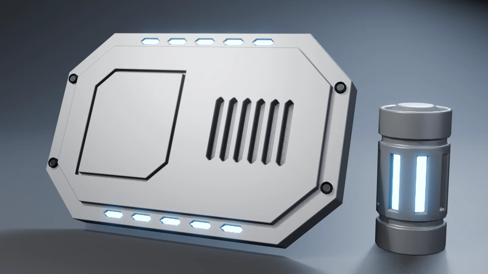
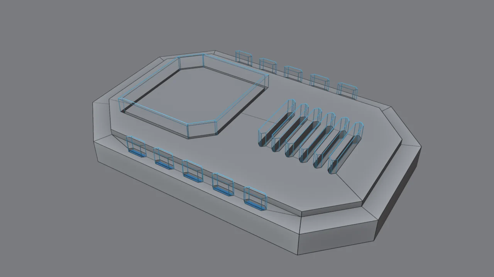
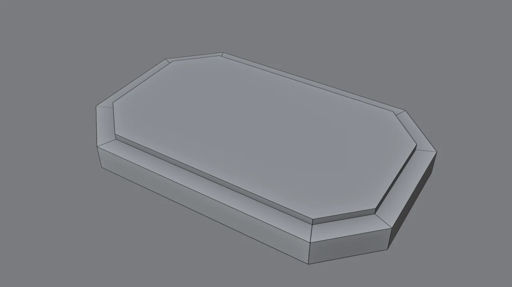
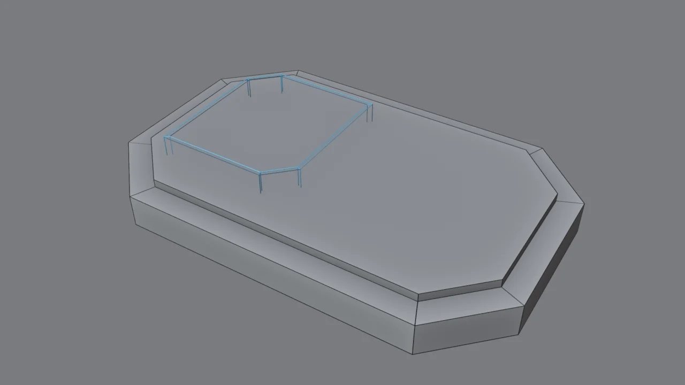
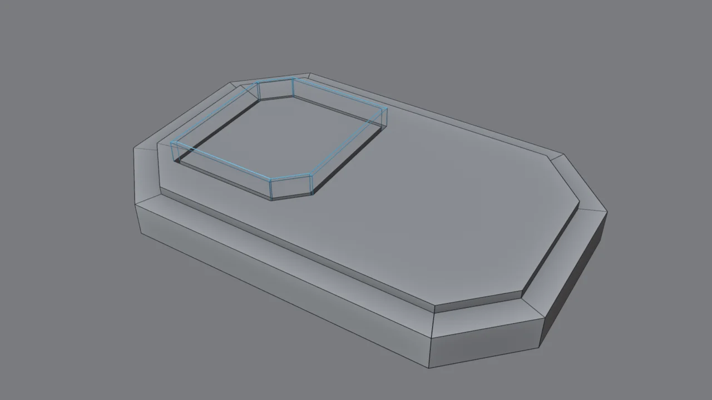
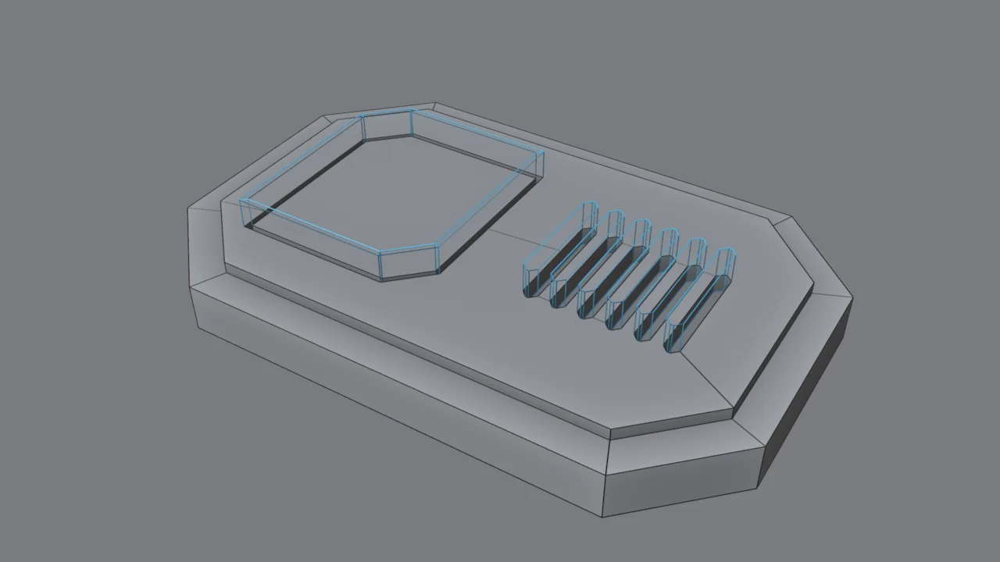
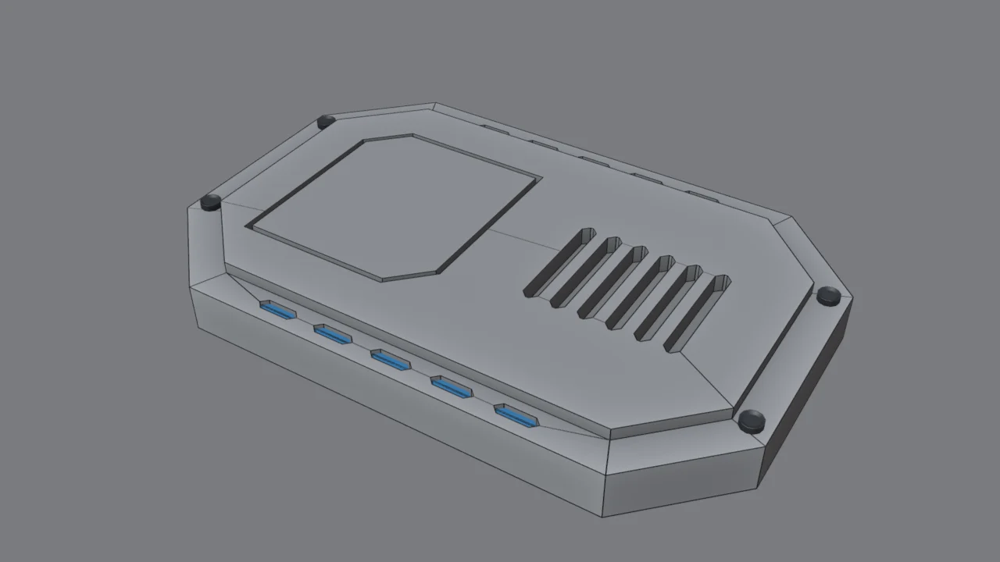
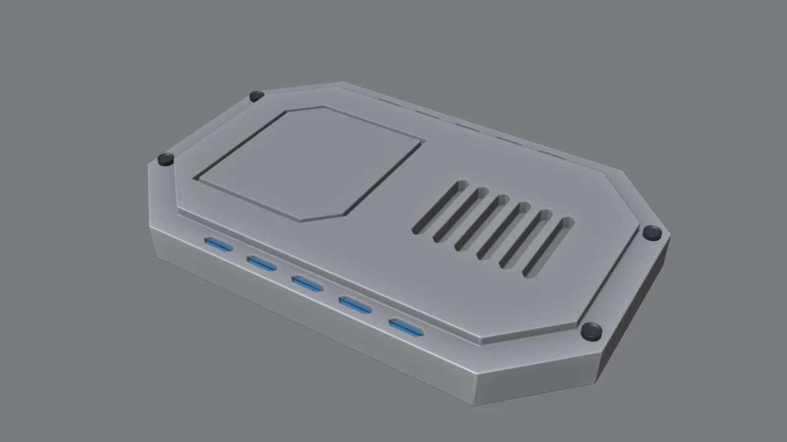
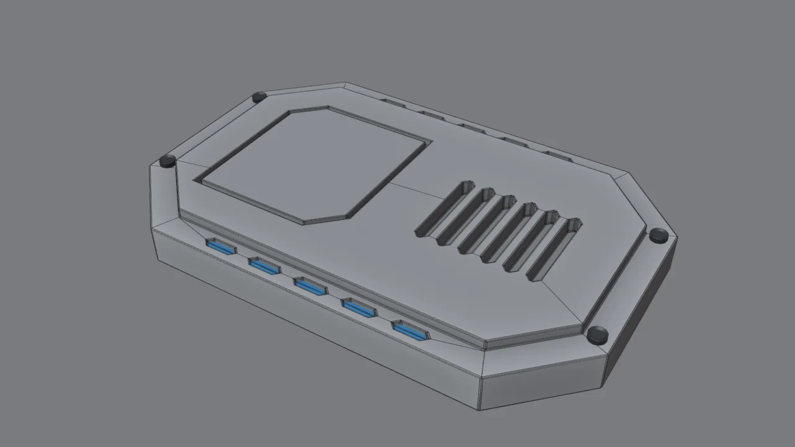
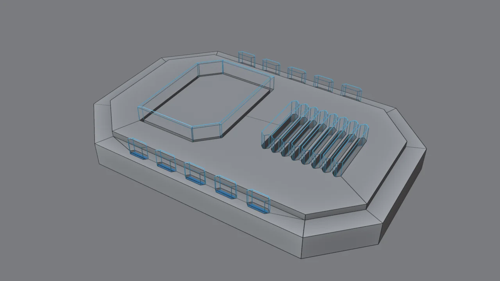

Lo que vas a forjar // objetivo

Esta placa es un «módulo de blindaje» genérico: lo podrás reutilizar en el pecho del androide, en un hombro o en el lateral de la espada. Aprenderás:
- Cortadores y el modificador Boolean con una colección.
- Líneas de panel con un cortador hueco (Solidify).
- Rejillas repitiendo un cortador con Array.
- Luces incrustadas con Array + Mirror.
- Floaters: detalles que se apoyan sin estar unidos.
Qué es un cortador // concepto
Un cortador (cutter) es un objeto normal que no se ve en el render: solo sirve para restar su volumen a otro objeto mediante el modificador Boolean. Es como una plantilla de troquel.
Destructivo
Aplicas el booleano y la malla cambia para siempre. Si luego la rejilla te parece pequeña, toca rehacerla. Es lo que hiciste en el reto del módulo 2.
No destructivo
El modificador se queda vivo. Mueves, escalas o duplicas el cortador y el corte se actualiza al instante. Así se diseña en hard surface.

Gírala paso a paso // 3D
Los cortadores aparecen en azul. Activa Malla para ver cómo el booleano reorganiza la geometría de la placa.
La base de la placa

- Parte de tu
estudio_base.blend. Añade un cubo y, en el panel N → Item → Dimensions, pon2×1.3×0.16. - Ctrl+A → Scale (ya sabes por qué) y súbelo al suelo: G Z
0.08. - Tab, modo aristas (2). Vista superior (Num 7), activa los rayos X (Alt+Z) y selecciona con Shift+clic las 4 aristas verticales de las esquinas.
- Ctrl+B, escribe
0.3y gira la rueda hasta 1 segmento: esquinas achaflanadas, la silueta típica mecha. - Modo caras (3), selecciona la cara de arriba: I
0.12y E0.04. Ya tienes una meseta y un marco.
Capas de altura: la meseta crea dos niveles. En hard surface se diseña en «capas»: base, placas encima y detalles encima de las placas. Esa superposición es lo que da sensación de complejidad mecánica.
El cortador de la línea de panel

Una línea de panel es un surco fino. Por eso el cortador no es un bloque, sino una pared hueca con la forma del panel:
- En modo objeto, Shift+A → Plane. En modo edición, escálalo y muévelo hasta que cubra la mitad izquierda de la meseta (unos 0.64 × 0.72).
- Modo vértices (1): selecciona dos esquinas opuestas y pulsa Ctrl+Shift+B (bevel de vértices) con
0.12y 1 segmento. - A → X → Only Faces: borras la cara y te queda solo el contorno.
- A → E Z
0.13: el contorno se convierte en una pared. - Colócala para que atraviese la superficie de la meseta (de Z ≈ 0.17 a 0.30). El surco tendrá la profundidad de lo que quede por debajo.
- Modo objeto → modificador Solidify: Thickness 0.018, Offset 0. Ese grosor es el ancho de la línea de panel.
- Ponle un nombre claro: doble clic en el Outliner →
Cortador_panel.
El booleano no destructivo

- Con el cortador seleccionado, pulsa M → + New Collection y llámala
Cortadores. - Selecciona la placa → Add Modifier → Generate → Boolean:
- Difference (restar)
- Operand Type: Collection →
Cortadores - Solver: Exact
- Al cortador: pestaña Object → Viewport Display → Display As: Wire, y en Visibility desactiva Renders.
- Para que los cortadores viajen con la placa: selecciona el cortador, luego la placa con Shift (la última es la activa), y pulsa Ctrl+P → Object (Keep Transform).
¿Por qué una colección? Con un único modificador Boolean apuntando a la colección, cualquier objeto que metas en Cortadores corta automáticamente. No tienes que tocar la placa nunca más.
Con Bool Tool: selecciona el cortador, luego la placa, y pulsa Ctrl+Shift+Num − (Brush Difference). Te crea el modificador y pone el cortador en wire automáticamente, aunque añade un modificador por cada cortador. Las dos formas son válidas, así que prueba ambas.
Rejilla: una ranura repetida con Array

- Añade un cubo y dale Dimensions
0.05×0.4×0.16. Ctrl+A → Scale. - Achaflana sus 4 aristas verticales: Ctrl+B
0.02, 1 segmento. Las ranuras con extremos en punta quedan mucho más «sci‑fi» que los rectángulos. - Colócala en la derecha de la meseta, atravesando la superficie (unos 6 cm de profundidad).
- Modificador Array: Count 6, desactiva Relative Offset, activa Constant Offset con X = 0.09.
- M →
Cortadores. Y ya está: la rejilla aparece sola.
Relative vs. Constant: Relative repite en múltiplos del tamaño del objeto (1 = pegados). Constant usa metros exactos. Para rejillas con huecos precisos, Constant es más cómodo.
Luces incrustadas: Array + Mirror
- Un cubo de
0.14×0.04×0.12con las aristas verticales achaflanadas a0.02: queda un guion hexagonal. - Colócalo en el marco delantero (Y ≈ −0.59), atravesando unos 3 cm la superficie, en el extremo izquierdo.
- Array: Count 5, Constant Offset X = 0.203.
- Mirror: desmarca X, marca Y y, en Mirror Object, elige la placa. Así se refleja respecto al centro de la placa y aparece la fila de atrás.
- Mételo en
Cortadores. - Las luces: duplica el cortador (Shift+D, clic derecho para dejarlo en su sitio), sácalo de la colección con M → Scene Collection, vuelve a activarle Renders y Display As: Textured.
- En modo edición, selecciona su cara de arriba y bájala: G Z
-0.1. Después A → S Shift+Z0.95para que no toque las paredes del hueco. - Material con Emission azul, Strength 6–9, como el núcleo del módulo 1.
Superficies que se tocan: si la luz coincide exactamente con las paredes del hueco, verás parpadeos (z‑fighting). Por eso la encogemos un 5 %: un pequeño hueco es invisible y evita el problema.
Tornillos flotantes

- Cilindro: Vertices 12, Radius 0.035, Depth 0.025. Apóyalo sobre el marco.
- Cara de arriba: I
0.012y E-0.008: la cabeza hueca. - Shade Smooth + un Bevel pequeño (
0.003, 2 segmentos, Harden Normals) y material oscuro. - Haz 3 copias con Alt+D (duplicado enlazado): si luego cambias la forma de uno, cambian todos.
Floaters: estos tornillos no están unidos a la placa, solo apoyados encima. A la distancia de un render nadie nota la junta, y te ahorras booleanos y geometría complicada. Los profesionales lo usan muchísimo para tornillos, logos, tuercas, bisagras o placas de serie.
Acabado después del booleano

- Placa → Shade Smooth.
- Bevel debajo del Boolean: Amount 0.006, Segments 2, Angle 30°, Harden Normals ✓.
- Weighted Normal (Keep Sharp) al final.
El orden importa: Boolean → Bevel → Weighted Normal. Como el bisel se calcula después del corte, los bordes de las ranuras y de la línea de panel también se redondean y brillan.
Bisel menor que la mitad del surco. La línea de panel mide 0.018 de ancho. Si el Bevel supera ~0.009, los dos lados se pisan y salen artefactos. Empieza siempre con valores pequeños. Si ves manchas o triángulos negros junto a los cortes, desactiva Clamp Overlap en el Bevel: en surcos finos genera geometría degenerada (lo descubrimos probando el addon Forja Tools).

Por qué no destructivo // la ventaja

A la derecha: la rejilla tiene 8 ranuras en vez de 6 (Count del Array) y el panel es más estrecho (escalé el cortador en X). No he rehecho nada. Diseñar así te deja probar ideas en segundos, y eso es lo que más necesitas cuando dejas volar la imaginación.
¿Cuándo aplicar los booleanos? Casi nunca mientras diseñas. Solo al final, si necesitas exportar el modelo a otro programa o el archivo se vuelve lento. Antes de aplicar, guarda una copia del archivo.
Problemas típicos con booleanos // diagnóstico
| Síntoma | Causa | Arreglo |
|---|---|---|
| El corte parpadea o deja una piel fina | La cara del cortador coincide justo con la superficie (coplanar) | Haz que el cortador atraviese la superficie con margen. |
| El corte no aparece o desaparece entero | Cortador abierto (no es un volumen cerrado) o con normales invertidas | Ciérralo (Solidify o F para rellenar) y Shift+N. |
| Todo va lento | Solver Exact con muchos cortadores densos | Prueba Solver: Fast mientras diseñas, o usa menos segmentos en los cortadores. |
| Manchas alrededor del corte | Sombreado sin la receta | Bevel (Harden Normals) + Weighted Normal, como en el módulo 2. |
| Bisel deformado | Escala sin aplicar en la placa o en el cortador | Ctrl+A → Scale en los dos. |
El Revisor de Forja te avisa de varios de estos problemas.
Reto: tu propia placa // checklist
Diseña una placa pensando en una parte concreta de tu androide: el pecho, un hombro o una espinillera. Ideas:
- Una escotilla hexagonal con su línea de panel.
- Una línea de panel en forma de «V» o de flecha, muy Gundam.
- Luces en otro color (amarillo de advertencia, rojo).
- Una rejilla circular: una ranura + Array con Object Offset apuntando a un Empty girado.